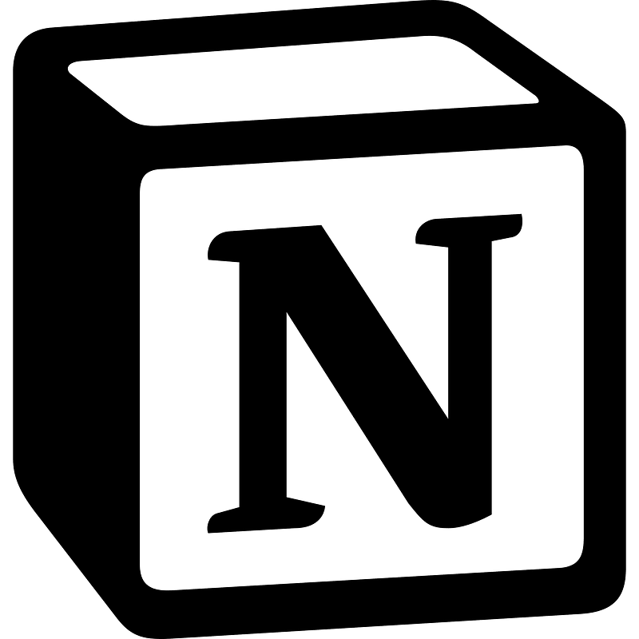
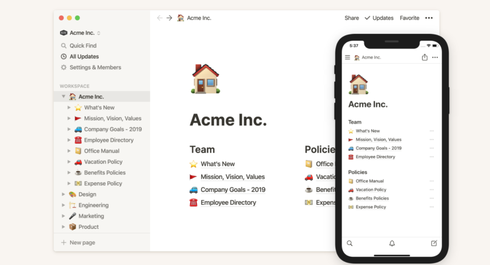
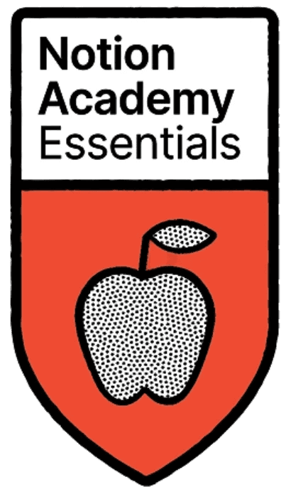

تطبيق نوشن هو مساحة عمل ذكي يساعدك على كتابة الملاحظات وتنظيم المهام وإدارة المشاريع في مكان واحد. نوشن يجمع بين تدوين الملاحظات، وتتبع المهام، وإنشاء قواعد البيانات، مما يجعله أداة مرنة تناسب الطلاب والموظفين والأفراد. كما يوفّر ميزات مدعومة بالذكاء الاصطناعي تساعدك على تلخيص المعلومات، وإدارة الاجتماعات، وتحسين سير العمل بسهولة

تطبيق نوشن يُستخدم لتنظيم المهام والملاحظات والمشاريع في مساحة عمل واحدة مرنة وسهلة التخصيص. يُعدّ Notion أداة متعددة الاستخدامات تساعد المستخدمين على تدوين الملاحظات، وإدارة المهام، وإنشاء قواعد بيانات، وتنظيم المشاريع بشكل بصري ومرتب. يمكن استخدامه لإنشاء صفحات تحتوي على نصوص وصور وروابط، أو لبناء أنظمة متكاملة مثل جداول المهام، وتتبع الأهداف، وإدارة الوقت. كما يتيح التعاون بين أفراد الفريق من خلال مشاركة الصفحات والعمل عليها في الوقت نفسه، مما يجعله مناسبًا للاستخدام الشخصي والعملي على حد سواء

يمكنك البدء في استخدام تطبيق نوشن بسهولة تامة دون أي تعقيد. كل ما عليك هو فتح التطبيق أو الموقع، ثم البدء مباشرة بإنشاء صفحاتك الخاصة وتنظيمها بالطريقة التي تناسبك، سواء كانت ملاحظات، مهام، قواعد بيانات، أو حتى صفحات شخصية. وإذا رغبت في تعلمه بشكل أعمق، يمكنك الاستفادة من الدورات المتاحة مثل Notion Academy التي تقدم شروحات منظمة تساعدك على فهم الأدوات وبناء أنظمة إنتاجية متقدمة. كما يمكنك تجربة قوالب جاهزة—مجانية أو مدفوعة—لتسريع انطلاقتك، حيث تمنحك هذه القوالب نماذج جاهزة للعمل يمكنك تعديلها وتخصيصها بما يلائم احتياجاتك. بهذه الطرق الثلاث، يصبح دخولك إلى عالم نوشن سلسًا ومرنًا، ويمنحك حرية اختيار أسلوب التعلم الذي يناسبك
